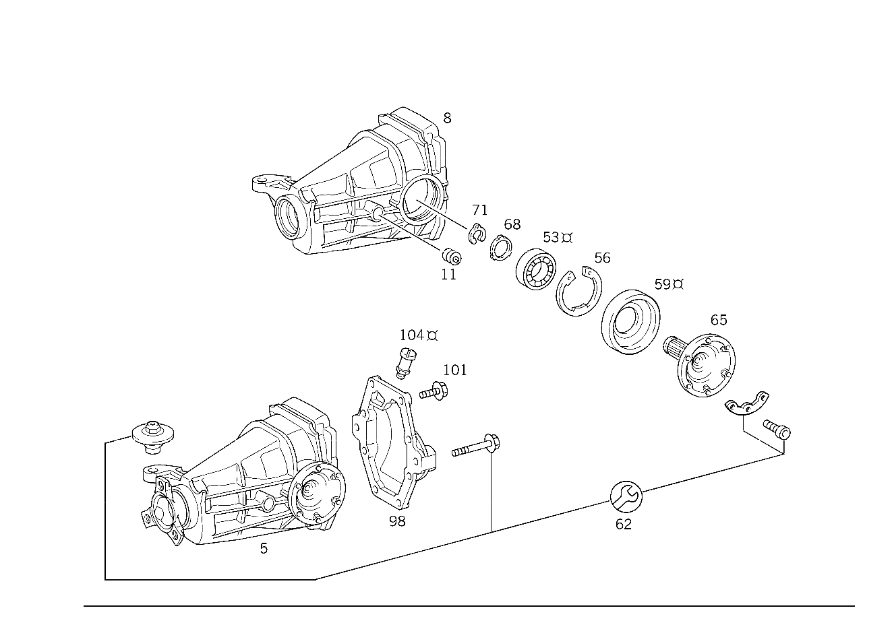

| № | Артикул | Название | Кол. | Примечание | Ограничение |
|---|---|---|---|---|---|
| 5 | A 202 350 43 14 | Картер моста | 1 | ЦЕНТР.ЭЛЕМ.ЗАДН.МОСТА, 5\-СТУП. МЕХ. КП ETS/ASR 1:3,46 Рулевое управление: ВлевоКоробка передач [697] ДЕТАЛЬ ПОСТАВЛЯЕТСЯ ТОЛЬКО/ИЛИ ТАКЖЕ КАК ЗАП.ЧАСТЬ | |
| 8 | A 124 351 05 05 | - Картер моста (ACHSGEHAEUSE) | 1 | ||
| 11 | A 186 997 00 32 | - ЗАГЛУШКА РЕЗЬБОВАЯ | 2 | M24X1,5 | |
| 14 | A 124 350 69 23 | - Дифференциал (AUSGLEICHSGETRIEBE) | 1 | БЕЗ КОМПЛЕКТА ШЕСТЕРЕН Рулевое управление: ВлевоКоробка передач | |
| 17 | A 115 353 12 62 | - Упорная шайба (ANLAUFSCHEIBE) | 2 | ПО НЕОБХОДИМОСТИ 1.25 MM; 1.25 MM | |
| 17 | A 115 353 11 62 | - Упорная шайба (ANLAUFSCHEIBE) | 2 | ПО НЕОБХОДИМОСТИ 1.30 MM; 1.30 MM | |
| 17 | A 115 353 16 62 | - Упорная шайба (ANLAUFSCHEIBE) | 2 | ПО НЕОБХОДИМОСТИ 1.35 MM; 1.35 MM | |
| 17 | A 115 353 10 62 | - Упорная шайба (ANLAUFSCHEIBE) | 2 | ПО НЕОБХОДИМОСТИ 1.40 MM; 1.40 MM | |
| 17 | A 115 353 17 62 | - Упорная шайба (ANLAUFSCHEIBE) | 2 | ПО НЕОБХОДИМОСТИ 1.45 MM; 1.45 MM | |
| 17 | A 115 353 09 62 | - Упорная шайба (ANLAUFSCHEIBE) | 2 | ПО НЕОБХОДИМОСТИ 1.50 MM; 1.50 MM | |
| 17 | A 115 353 18 62 | - Упорная шайба (ANLAUFSCHEIBE) | 2 | ПО НЕОБХОДИМОСТИ 1.55 MM; 1.55 MM | |
| 17 | A 115 353 08 62 | - Упорная шайба (ANLAUFSCHEIBE) | 2 | ПО НЕОБХОДИМОСТИ 1.60 MM; 1.60 MM | |
| 17 | A 115 353 19 62 | - Упорная шайба (ANLAUFSCHEIBE) | 2 | ПО НЕОБХОДИМОСТИ 1.65 MM; 1.65 MM | |
| 20 | A 115 353 03 15 | - ШЕСТЕРНЯ ПОЛУОСИ | - | ||
| 20 | A 211 353 01 15 | - Шестерня полуоси (ACHSWELLENRAD) | 2 | ||
| 23 | A 107 353 00 14 | - Сателлит дифференциала (AUSGLEICHSKEGELRAD) | 2 | ||
| 26 | A 115 353 03 24 | - Упорное кольцо (DRUCKRING) | 2 | ||
| 29 | A 124 353 07 21 | - Палец (BOLZEN) | 1 | ||
| 32 | N 001481 006007 | - Распорный штифт | 1 | [402] БОЛЬШЕ НЕ ПОСТАВЛЯЕТСЯ | |
| 44 | A 124 350 16 39 | - РЯД ШЕСТЕРЕН | - | 1:3.46 Рулевое управление: ВлевоКоробка передач | |
| 44 | A 124 350 56 39 | - Блок шестерен (RADSATZ) | 1 | 1:3.46; 1:3.46 Рулевое управление: ВлевоКоробка передач | |
| 47 | A 123 990 30 01 | - БОЛТ | - | ||
| 47 | A 202 990 28 01 | - БОЛТ | 10 | ТАРЕЛЬЧ. ШЕСТЕРНЯ НА КОРПУСЕ ДИФФЕРЕНЦИАЛА | |
| 53 | A 001 980 21 02 | - Конический подшипник (KEGELLAGER) | 2 | ОПОРА ТАРЕЛЬЧ. ШЕСТЕРНИ [402] БОЛЬШЕ НЕ ПОСТАВЛЯЕТСЯ | |
| 56 | A 123 994 01 41 | - Стопорное кольцо (SICHERUNGSRING) | 2 | ПО НЕОБХОДИМОСТИ 3.60 MM; 3.60 MM | |
| 56 | A 123 994 02 41 | - Стопорное кольцо (SICHERUNGSRING) | 2 | ПО НЕОБХОДИМОСТИ 3.70 MM; 3.70 MM | |
| 56 | A 123 994 03 41 | - Стопорное кольцо (SICHERUNGSRING) | 2 | ПО НЕОБХОДИМОСТИ 3.80 MM; 3.80 MM | |
| 56 | A 123 994 04 41 | - предохранитель (SICHERUNG) | 2 | ПО НЕОБХОДИМОСТИ 3.85 MM; 3.85 MM [402] БОЛЬШЕ НЕ ПОСТАВЛЯЕТСЯ | |
| 56 | A 123 994 05 41 | - Стопорное кольцо (SICHERUNGSRING) | 2 | ПО НЕОБХОДИМОСТИ 3.90 MM; 3.90 MM [402] БОЛЬШЕ НЕ ПОСТАВЛЯЕТСЯ | |
| 56 | A 123 994 06 41 | - предохранитель (SICHERUNG) | 2 | ПО НЕОБХОДИМОСТИ 3.95 MM; 3.95 MM | |
| 56 | A 123 994 07 41 | - Стопорное кольцо (SICHERUNGSRING) | 2 | ПО НЕОБХОДИМОСТИ 4.00 MM; 4.00 MM | |
| 56 | A 123 994 08 41 | - предохранитель (SICHERUNG) | 2 | ПО НЕОБХОДИМОСТИ 4.05 MM; 4.05 MM [402] БОЛЬШЕ НЕ ПОСТАВЛЯЕТСЯ | |
| 56 | A 123 994 09 41 | - Стопорное кольцо (SICHERUNGSRING) | 2 | ПО НЕОБХОДИМОСТИ 4.10 MM; 4.10 MM [402] БОЛЬШЕ НЕ ПОСТАВЛЯЕТСЯ | |
| 56 | A 123 994 10 41 | - предохранитель (SICHERUNG) | 2 | ПО НЕОБХОДИМОСТИ 4.15 MM; 4.15 MM | |
| 56 | A 123 994 11 41 | - Стопорное кольцо (SICHERUNGSRING) | 2 | ПО НЕОБХОДИМОСТИ 4.20 MM; 4.20 MM | |
| 56 | A 123 994 12 41 | - Стопорное кольцо (SICHERUNGSRING) | 2 | ПО НЕОБХОДИМОСТИ 4.30 MM; 4.30 MM | |
| 56 | A 123 994 13 41 | - Стопорное кольцо (SICHERUNGSRING) | 2 | ПО НЕОБХОДИМОСТИ 4.40 MM; 4.40 MM | |
| 56 | A 124 994 53 41 | - ПРЕДОХРАНИТЕЛЬ | 2 | ПО НЕОБХОДИМОСТИ 4.50 MM; 4.50 MM | |
| 56 | A 124 994 54 41 | - ПРЕДОХРАНИТЕЛЬ | 2 | ПО НЕОБХОДИМОСТИ 4.60 MM; 4.60 MM | |
| 59 | A 020 997 23 47 | - УПЛОТНИТ. КОЛЬЦО | - | [055] ИСПОЛЬЗОВАТЬ СТАРЫЙ НОМЕР ДЕТ. ДО ИД.№ F 061726 | |
| 59 | A 022 997 98 47 | - Уплотнительное кольцо (DICHTRING) | 2 | ФЛАНЕЦ ВНУТР. | |
| 62 | A 202 350 57 03 | РЕМКОМПЛЕКТ | - | [007] ИСПОЛЬЗОВАТЬ СТАРЫЙ НОМЕР ДЕТ. ДО ИД.№ F 007080 ВНИМАНИЕ УЧЕСТЬ ИЗМЕН. МОМЕНТА ЗАТЯЖКИ | |
| 62 | A 202 350 87 14 | Ремк-т редуктора зад.мос. (REP.SATZ HA-GETRIEBE) | 1 | КРЕП. ДЕТАЛИ ДЛЯ ЦЕНТР. ЭЛЕМЕНТ. ЗАДН. МОСТА | |
| 65 | A 124 350 53 45 | - ФЛАНЕЦ | - | [056] ИСПОЛЬЗОВАТЬ СТАРЫЙ НОМЕР ДЕТ. ДО ИД.№ F 076073 | |
| 65 | A 208 350 01 45 | - Фланец (FLANSCH) | 2 | ВНУТР. | |
| 68 | A 123 357 15 52 | - Диск (SCHEIBE) | 2 | ПО НЕОБХОДИМОСТИ 0.70 MM | |
| 68 | A 123 357 14 52 | - Диск (SCHEIBE) | 2 | ПО НЕОБХОДИМОСТИ 0.80 MM | |
| 68 | A 123 357 13 52 | - Дистанционная шайба (ABSTANDSSCHEIBE) | 2 | ПО НЕОБХОДИМОСТИ 0.85 MM | |
| 68 | A 123 357 12 52 | - Диск (SCHEIBE) | 2 | ПО НЕОБХОДИМОСТИ 0.90 MM | |
| 68 | A 123 357 11 52 | - Дистанционная шайба (ABSTANDSSCHEIBE) | 2 | ПО НЕОБХОДИМОСТИ 0.95 MM | |
| 68 | A 123 357 10 52 | - Диск (SCHEIBE) | 2 | ПО НЕОБХОДИМОСТИ 1.00 MM | |
| 68 | A 123 357 09 52 | - Дистанционная шайба (ABSTANDSSCHEIBE) | 2 | ПО НЕОБХОДИМОСТИ 1.05 MM | |
| 68 | A 123 357 08 52 | - Диск (SCHEIBE) | 2 | ПО НЕОБХОДИМОСТИ 1.10 MM | |
| 68 | A 123 357 07 52 | - Дистанционная шайба (ABSTANDSSCHEIBE) | 2 | ПО НЕОБХОДИМОСТИ 1.15 MM | |
| 68 | A 123 357 06 52 | - Диск (SCHEIBE) | 2 | ПО НЕОБХОДИМОСТИ 1.20 MM | |
| 68 | A 123 357 05 52 | - Дистанционная шайба (ABSTANDSSCHEIBE) | 2 | ПО НЕОБХОДИМОСТИ 1.25 MM | |
| 68 | A 123 357 04 52 | - РАСПОРНАЯ ШАЙБА | 2 | ПО НЕОБХОДИМОСТИ 1.30 MM [402] БОЛЬШЕ НЕ ПОСТАВЛЯЕТСЯ | |
| 68 | A 123 357 03 52 | - Дистанционная шайба (ABSTANDSSCHEIBE) | 2 | ПО НЕОБХОДИМОСТИ 1.35 MM [402] БОЛЬШЕ НЕ ПОСТАВЛЯЕТСЯ | |
| 68 | A 123 357 02 52 | - РАСПОРНАЯ ШАЙБА | 2 | ПО НЕОБХОДИМОСТИ 1.40 MM [402] БОЛЬШЕ НЕ ПОСТАВЛЯЕТСЯ | |
| 68 | A 123 357 01 52 | - Диск (SCHEIBE) | 2 | ПО НЕОБХОДИМОСТИ 1.50 MM [402] БОЛЬШЕ НЕ ПОСТАВЛЯЕТСЯ | |
| 71 | A 115 994 04 34 | - Пруж. стопорное кольцо (SPRENGRING) | 2 | ||
| 74 | A 116 353 11 52 | - РАСПОРНАЯ ШАЙБА | 1 | ПО НЕОБХОДИМОСТИ 1.50 MM | |
| 74 | A 116 353 20 52 | - РАСПОРНАЯ ШАЙБА | 1 | ПО НЕОБХОДИМОСТИ 1.55 MM | |
| 74 | A 116 353 21 52 | - Компенсационная шайба (AUSGLEICHSSCHEIBE) | 1 | ПО НЕОБХОДИМОСТИ 1.60 MM | |
| 74 | A 116 353 22 52 | - РАСПОРНАЯ ШАЙБА | 1 | ПО НЕОБХОДИМОСТИ 1.65 MM [402] БОЛЬШЕ НЕ ПОСТАВЛЯЕТСЯ | |
| 74 | A 116 353 23 52 | - Компенсационная шайба (AUSGLEICHSSCHEIBE) | 1 | ПО НЕОБХОДИМОСТИ 1.70 MM | |
| 74 | A 116 353 24 52 | - РАСПОРНАЯ ШАЙБА | 1 | ПО НЕОБХОДИМОСТИ 1.75 MM | |
| 74 | A 116 353 25 52 | - Компенсационная шайба (AUSGLEICHSSCHEIBE) | 1 | ПО НЕОБХОДИМОСТИ 1.80 MM | |
| 74 | A 116 353 26 52 | - РАСПОРНАЯ ШАЙБА | 1 | ПО НЕОБХОДИМОСТИ 1.85 MM | |
| 74 | A 116 353 27 52 | - Компенсационная шайба (AUSGLEICHSSCHEIBE) | 1 | ПО НЕОБХОДИМОСТИ 1.90 MM | |
| 74 | A 116 353 28 52 | - РАСПОРНАЯ ШАЙБА | 1 | ПО НЕОБХОДИМОСТИ 1.95 MM | |
| 74 | A 116 353 29 52 | - Компенсационная шайба (AUSGLEICHSSCHEIBE) | 1 | ПО НЕОБХОДИМОСТИ 2.00 MM | |
| 74 | A 116 353 30 52 | - Дистанционная шайба (ABSTANDSSCHEIBE) | 1 | ПО НЕОБХОДИМОСТИ 2.05 MM | |
| 74 | A 116 353 31 52 | - РАСПОРНАЯ ШАЙБА | 1 | ПО НЕОБХОДИМОСТИ 2.10 MM [402] БОЛЬШЕ НЕ ПОСТАВЛЯЕТСЯ | |
| 74 | A 116 353 32 52 | - Дистанционная шайба (ABSTANDSSCHEIBE) | 1 | ПО НЕОБХОДИМОСТИ 2.15 MM | |
| 74 | A 116 353 33 52 | - Компенсационная шайба (AUSGLEICHSSCHEIBE) | 1 | ПО НЕОБХОДИМОСТИ 2.20 MM | |
| 74 | A 116 353 34 52 | - РАСПОРНАЯ ШАЙБА | 1 | ПО НЕОБХОДИМОСТИ 2.25 MM | |
| 74 | A 116 353 35 52 | - РАСПОРНАЯ ШАЙБА | 1 | ПО НЕОБХОДИМОСТИ 2.30 MM | |
| 74 | A 116 353 36 52 | - РАСПОРНАЯ ШАЙБА | 1 | ПО НЕОБХОДИМОСТИ 2.35 MM | |
| 74 | A 116 353 37 52 | - Компенсационная шайба (AUSGLEICHSSCHEIBE) | 1 | ПО НЕОБХОДИМОСТИ 2.40 MM | |
| 77 | A 000 980 84 02 | - Конический подшипник (KEGELLAGER) | 1 | ПРИВОДН. КОНИЧ. ШЕСТЕРНЯ | |
| 80 | A 108 353 00 42 | - Распорная втулка (ABSTANDSBUCHSE) | 1 | ||
| 83 | A 109 353 10 62 | - Фрикционная шайба (REIBSCHEIBE) | 2 | ||
| 86 | A 002 980 11 02 | - Кон. роликоподшипник (KEGELROLLENLAGER) | 1 | ПРИВОДН. КОНИЧ. ШЕСТЕРНЯ | |
| 89 | A 020 997 21 47 | - УПЛОТНИТ. КОЛЬЦО | - | [055] ИСПОЛЬЗОВАТЬ СТАРЫЙ НОМЕР ДЕТ. ДО ИД.№ F 061726 [099] ВНИМАНИЕ ! ФЛАНЕЦ ЗАКАЗЫВАТЬ СОГЛАСНО АКТУАЛЬНОМУ КАТАЛОГУ EPC . | |
| 89 | A 022 997 99 47 | - Уплотнительное кольцо (DICHTRING) | - | [056] ИСПОЛЬЗОВАТЬ СТАРЫЙ НОМЕР ДЕТ. ДО ИД.№ F 076073 [099] ВНИМАНИЕ ! ФЛАНЕЦ ЗАКАЗЫВАТЬ СОГЛАСНО АКТУАЛЬНОМУ КАТАЛОГУ EPC . | |
| 89 | A 025 997 00 47 | - Уплотнительное кольцо (DICHTRING) | 1 | ПРИВОДН. КОНИЧ. ШЕСТЕРНЯ [099] ВНИМАНИЕ ! ФЛАНЕЦ ЗАКАЗЫВАТЬ СОГЛАСНО АКТУАЛЬНОМУ КАТАЛОГУ EPC . | |
| 92 | A 124 350 65 45 | - ФЛАНЕЦ | - | [055] ИСПОЛЬЗОВАТЬ СТАРЫЙ НОМЕР ДЕТ. ДО ИД.№ F 061726 | |
| 92 | A 211 350 01 45 | - ФЛАНЕЦ | - | ||
| 92 | A 211 350 02 45 | - Фланец шарнира | 1 | ФЛАНЕЦ ШАРНИРА 100 MM; 100mm | |
| 92 | A 212 350 00 45 | - Фланец шарнира (GELENKFLANSCH) | 1 | ФЛАНЕЦ ШАРНИРА 100 MM; 100 MM | |
| 95 | A 123 353 00 72 | - гайка (MUTTER) | 1 | ФЛАНЕЦ К ВЕДУЩЕЙ КОНИЧ.ШЕСТЕРНИ; M26X1.5 | |
| 95 | A 221 353 02 72 | - Гайка редукт. задн. моста (BUNDMUTTER HA-GETRIEBE) | 1 | ФЛАНЕЦ К ВЕДУЩЕЙ КОНИЧ.ШЕСТЕРНИ; M26X1.5 | |
| 98 | A 124 351 30 08 | - КОНЦЕВАЯ КРЫШКА | - | ||
| 98 | A 124 351 37 08 | - Крышка (DECKEL) | 1 | ||
| 101 | A 000 990 32 04 | - болт (SCHRAUBE) | - | [402] БОЛЬШЕ НЕ ПОСТАВЛЯЕТСЯ | |
| 101 | N 910143 010009 | - Винт с 6-гр. глвк | 8 | M10X45; M10X25 | |
| 104 | A 126 350 00 90 | Воздушный клапан (ENTLUEFTER) | 1 | [402] БОЛЬШЕ НЕ ПОСТАВЛЯЕТСЯ | |
| 107 | A 210 350 53 14 | ремкомплект (REPARATURSATZ) | 1 | РЕДУКТОР ЗАДНЕГО МОСТА [402] БОЛЬШЕ НЕ ПОСТАВЛЯЕТСЯ [099] ВНИМАНИЕ ! ФЛАНЕЦ ЗАКАЗЫВАТЬ СОГЛАСНО АКТУАЛЬНОМУ КАТАЛОГУ EPC . [004] +ЗАКАЗАТЬ КРЕП. ДЕТАЛИ ДЛЯ ЦЕНТР.ЭЛЕМЕНТ.ЗАД.МОСТА | |
| Q 000000000001 | Важная информация | 99 | ОТДЕЛЬН.ДЕТАЛИ ДИФФЕРЕНЦ. | ||
| Q 000000000001 | Важная информация | 99 | ОПОРА ДИФФЕРЕНЦ. | ||
| Q 000000000001 | Важная информация | 99 | ПОДШИПНИК ПРИВОДНОЙ КОНИЧЕСКОЙ ШЕСТЕРНИ |
Позиций: 102 · подписано на схемах: 99 · колесо — плавный зум в курсор, перетаскивание — пан, двойной клик — зум, клик по артикулу — скопировать · наведите на строку или цифру на схеме — подсветка связки, клик — закрепить.